1
Paso 1
Ingrese al siguiente link
https://drive.google.com/file/d/1HFN6Lilrxs8wl2JvcrkKoaf_wcxPRrrv/view?usp=drive_linkCentro de ayuda · Guía de instalación
Siga estos pasos para descargar el instalador y dejar GammaLab listo en su equipo con Windows.
Ingrese al siguiente link
https://drive.google.com/file/d/1HFN6Lilrxs8wl2JvcrkKoaf_wcxPRrrv/view?usp=drive_linkPresione el botón azul que dice Descargar.
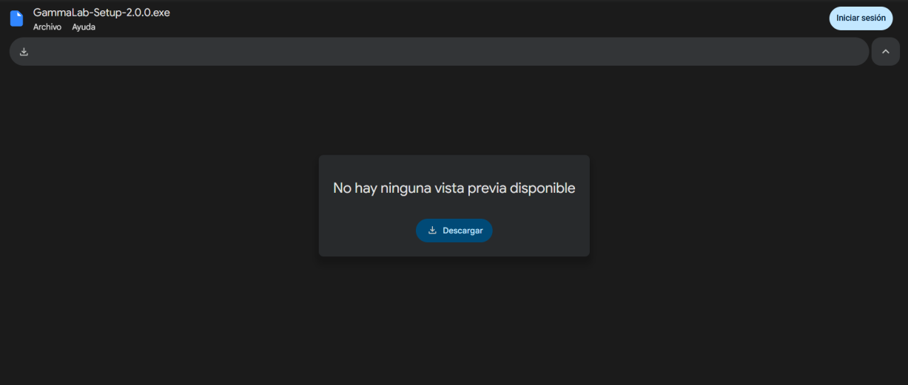
Presione Descargar de todos modos.
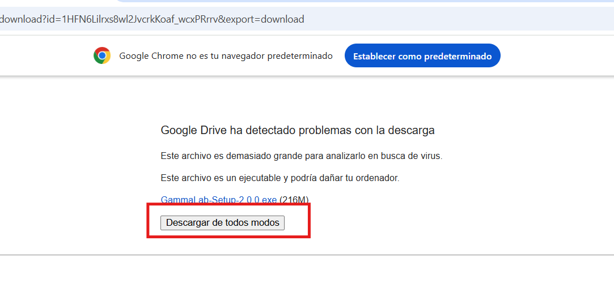
Ingrese al explorador de archivos, allí presione con doble click el instalador de GammaLab, que se verá así:
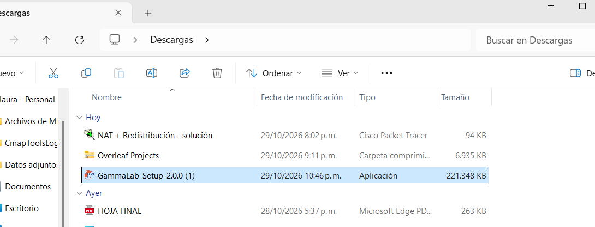
Aparecerá esta ventana emergente.
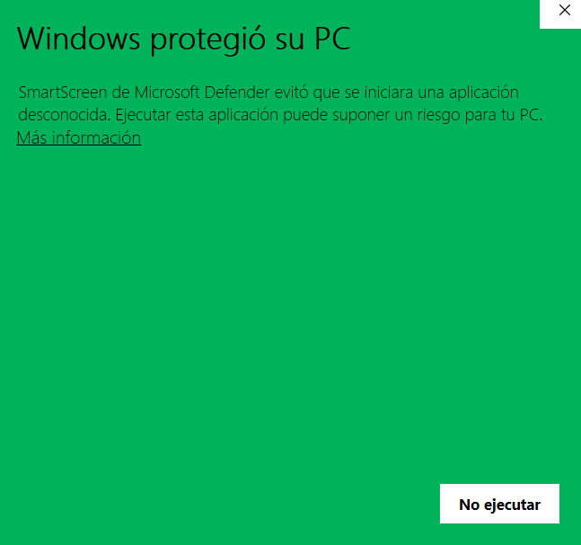
Presione lo enmarcado en rojo (Más información).
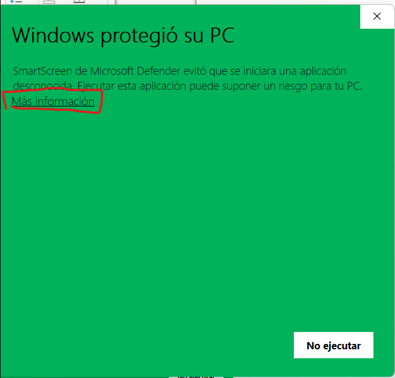
Le aparecerá esta ventana inmediatamente, por favor presione Ejecutar de todas formas.
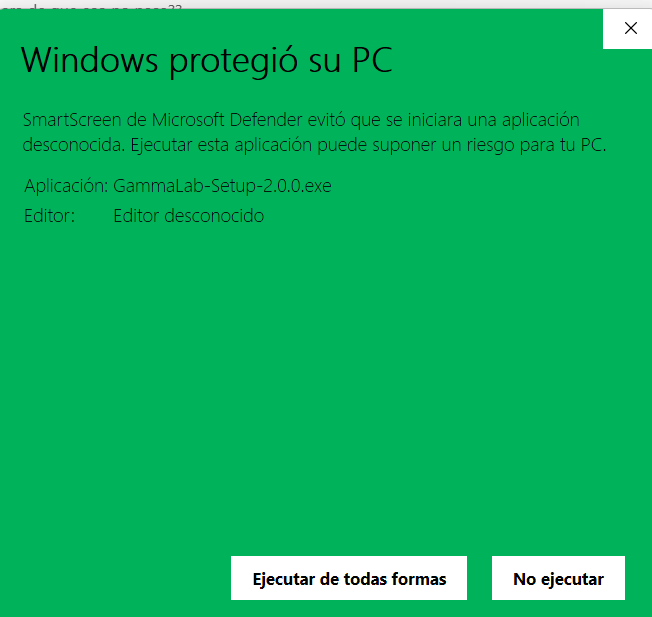
Otorgue permisos de administrador para poder instalar la aplicación: presione Sí.
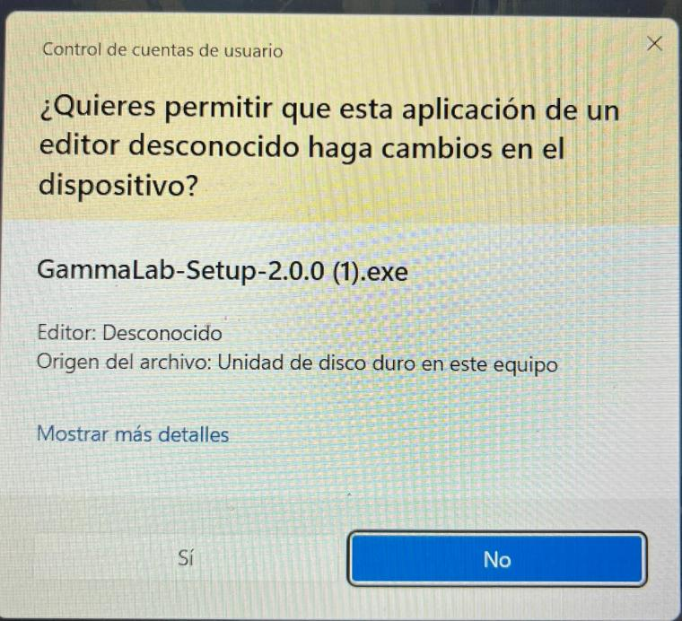
Seleccione el idioma a usar, una vez hecho presione Aceptar.
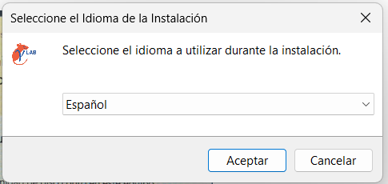
Elija dónde guardar GammaLab, luego presione Siguiente.
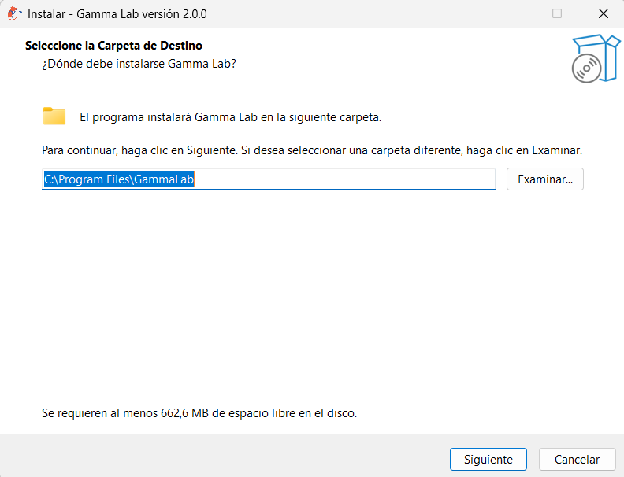
Seleccione Siguiente.
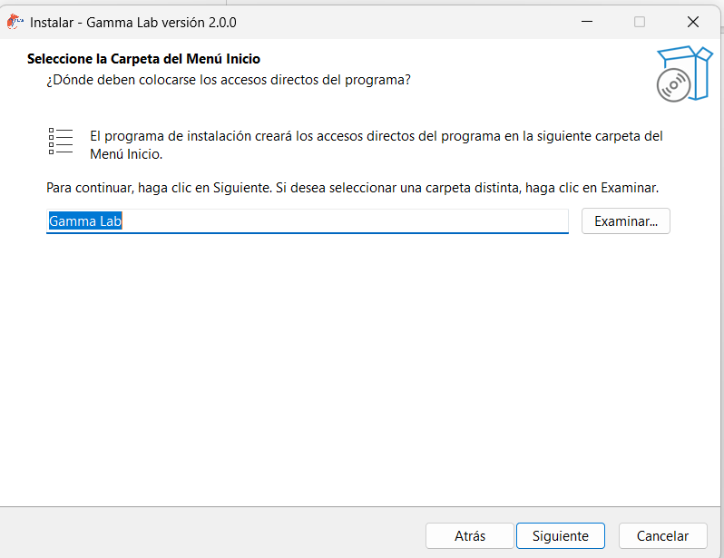
Si usted no desea agregar un acceso directo de la app, desmarque la opción y dé Siguiente; de lo contrario, solo dé Siguiente.
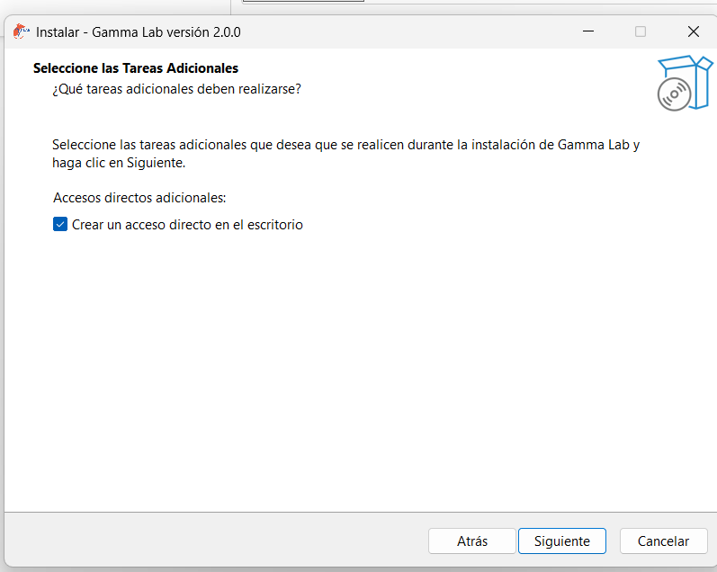
Si está de acuerdo con la configuración, presione Instalar.
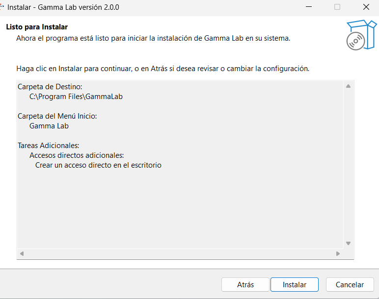
Espere unos segundos mientras se completa la instalación y el ícono de GammaLab aparecerá en su escritorio. Bastará con dar click al ícono para empezar a usarla.
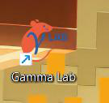